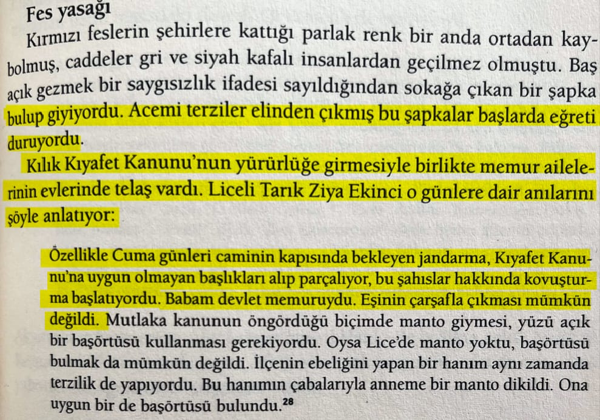
📌 Kılık kıyafet kanunu yüzünden memur eşlerinin kıyafetinin kısıtlanması ve kanuna uymayan kıyafetlerin zorla toplanıp parçalanması:📚 Liceli Tarık Ziya'dan aktaran: İpek Çalışlar, Atatürk, s.481
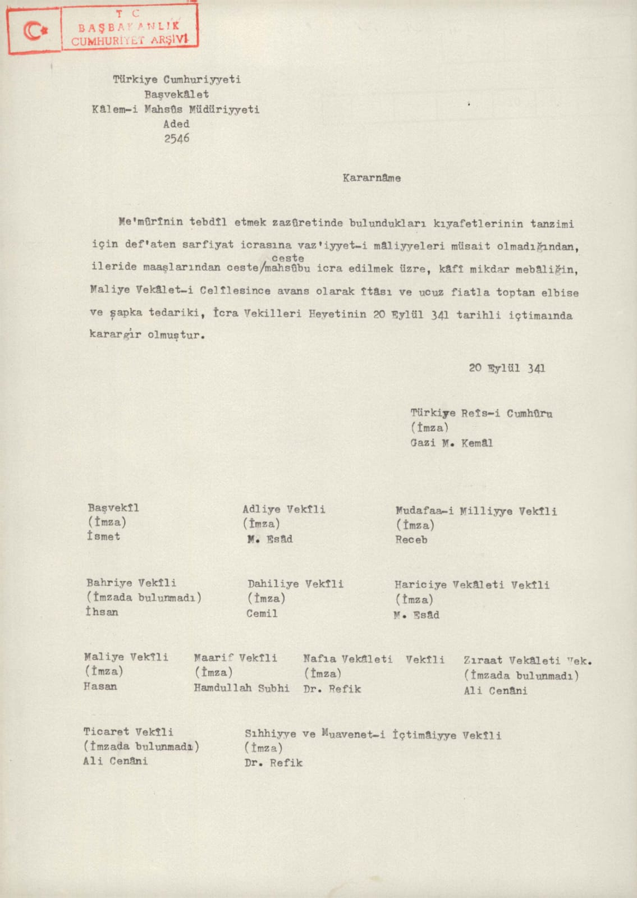
📌 *Memurların gerekli kılık kıyafetleri tedarik etmeleri için *Daha sonra maaşlarından kesilmek şartıyla avans verildiğine dâir.📚 Devlet Arşivleri kataloğu, 20.09.1925 tarihli bakanlar kurulu kararı
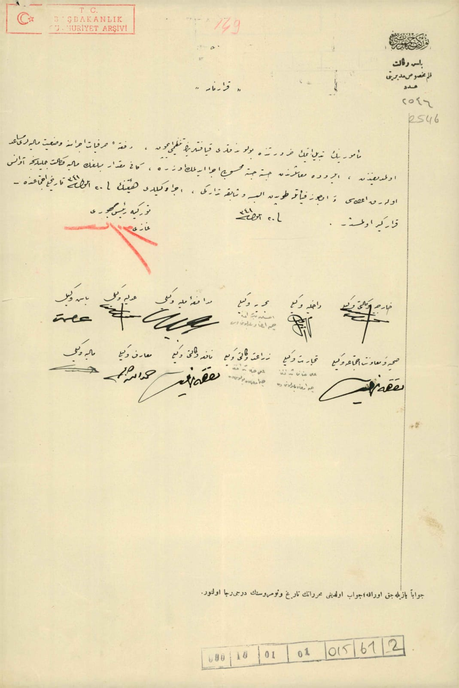
2.belge

📌 *Peçe, çarşafa vs hakaret ve kaldırılmasına dâir.*📚 Devlet Arşivleri kataloğu, 8 Ocak 2024'te gizliliği kaldırılan 05.02.1936 tarihli devlet belgesi
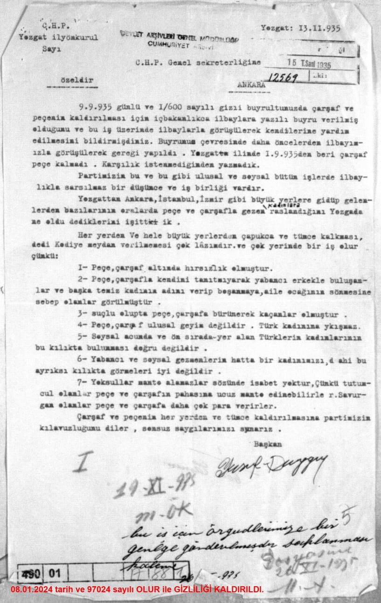
📌 *Peçe, çarşaf ulusal giyim değildir türk kadınına yakışmaz.* 📚 Cumhuriyet Arşivi, 490-01-0-0 no. 17-88-1
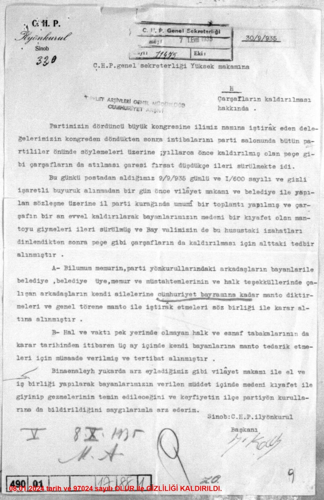
📚 Cumhuriyet Arşivi, 490-01-0-0 no. 17-88-1
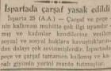
📚 Cumhuriyet Gazetesi, 26 Ağustos 1935, s.3
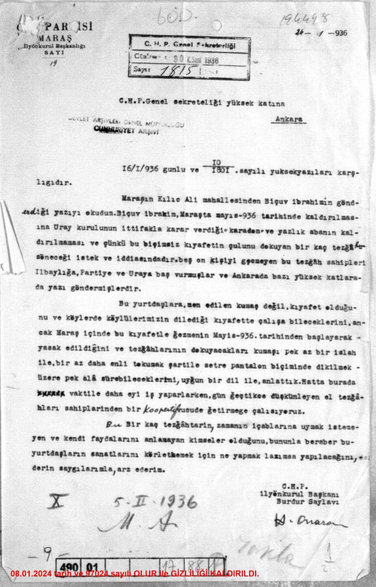
📚 Devlet Arşivleri kataloğu, 08.01.2024 tarihinde gizliliği kaldırılan 16.01.1936 tarihine ait devlet belgesi
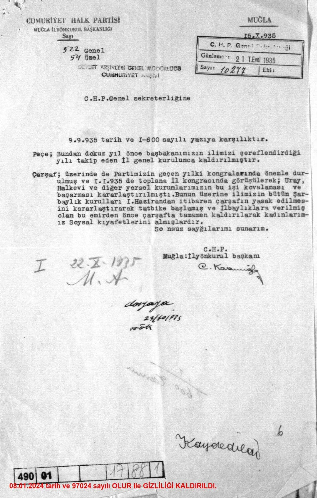
📌 *İlbaylıklara verilen emir ile peçe ve çarşafın yasak edilmesi*📚 Devlet Arşivleri kataloğu, 08.01.2024 tarihinde gizliliği kaldırılan 09.09.1935 tarihine ait devlet belgesi
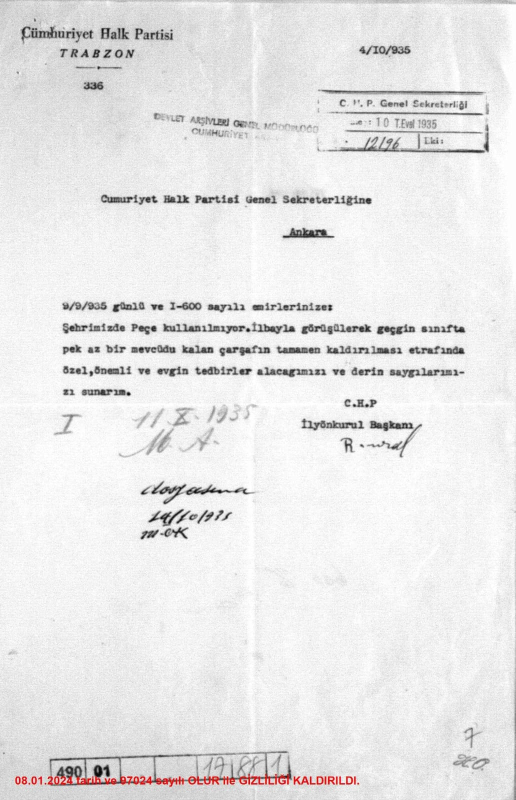
📌 *Peçenin ve çarşafın tamamen kaldırılması için tedbirler alınacağı ve bunun için ilbaylıkla görüşüldüğüne dâir.*📚 Devlet Arşivleri kataloğu, 08.01.2024 tarihinde gizliliği kaldırılan 10.10.1935 tarihine ait devlet belgesi
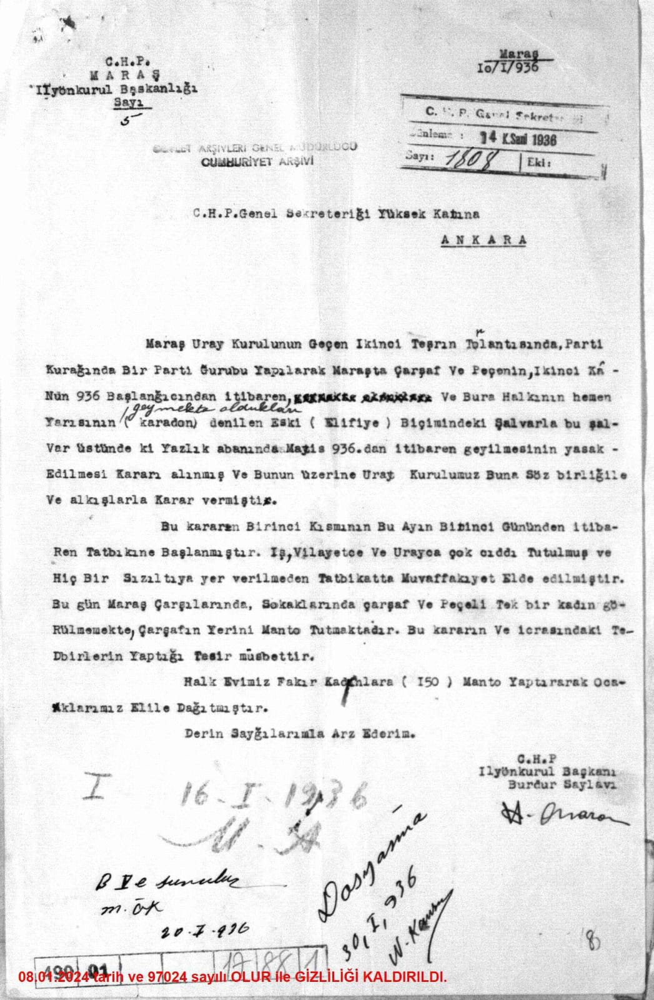
📌 *Peçe ve çarşafın ve şalvarın yasak edilmesi ve bu yasağın tatbikine dâir.*📚 Devlet Arşivleri kataloğu, 08.01.2024 tarihinde gizliliği kaldırılan 14.01.1936 tarihine ait devlet belgesi
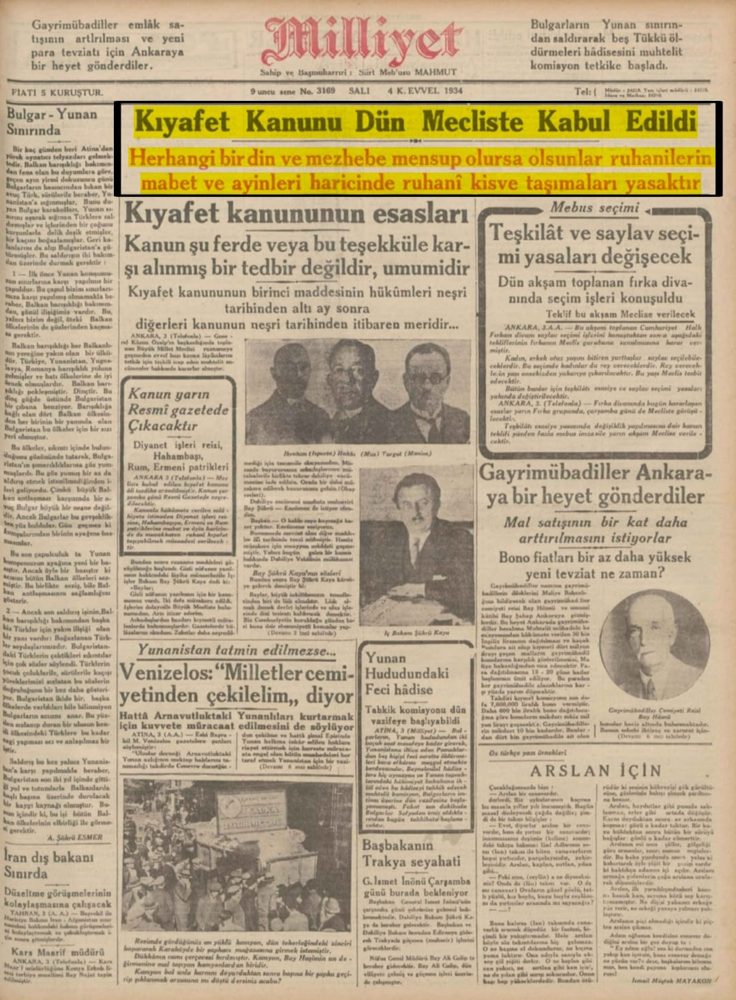